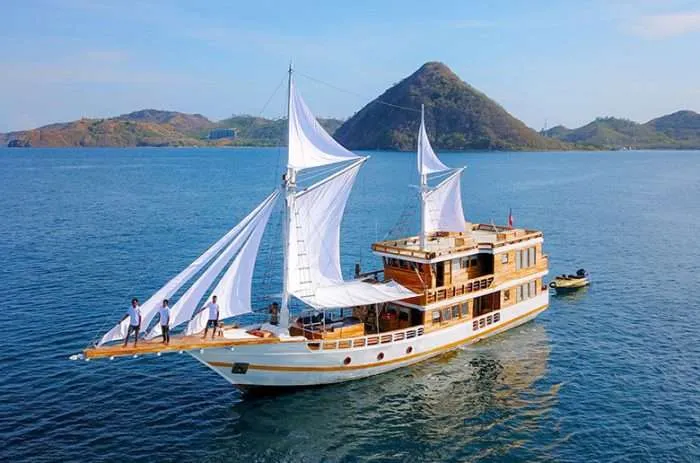
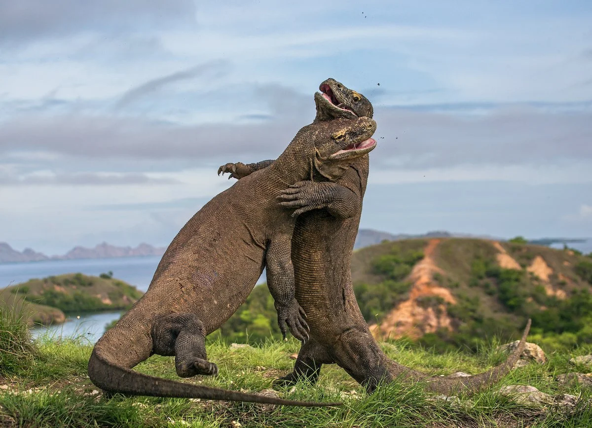
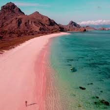
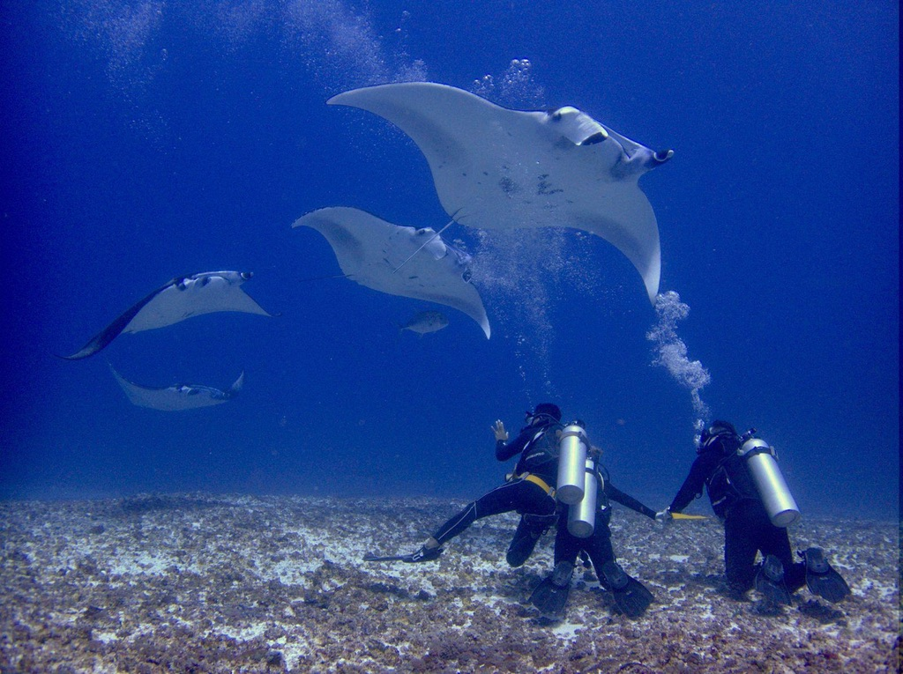
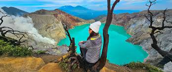
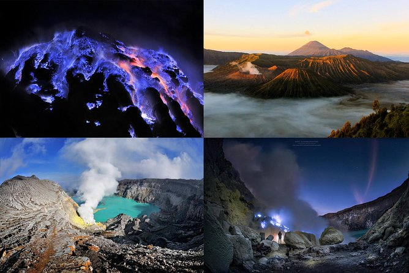

Dragons, temples, volcanoes, and a whole lot of rice wine. Our bucket-list trip is officially happening.
9–14
Total Days
3
Destinations
$35
Avg / Night
∞
Memories
0?
Food Poisoning
🦎 Komodo Island
🌺 Bali
🌋 East Java
Indianapolis
Fly Out · 23-35 hrs
Bali (DPS)
Arrive · Base Camp
Labuan Bajo
Komodo · 2–3 nights
Bali
Explore · 3–4 nights
East Java
Volcanoes · 3–4 nights
Fly Home
Back to Indy
Where We're Going
The Route
Save the Date
May – June 2027
SUN
MON
TUE
WED
THU
FRI
SAT
16
17
18
19
20
21
22
23
24
25
26
27
28
29
30
31
JUN1
2
3
4
5
6
7
8
9
10
11
12
May 21 – 31
May 31 – June 6
Before You Go
Trip Essentials
✈️
Getting There
Fly from Indianapolis (IND) to Bali's Ngurah Rai Airport (DPS). Expect 23–35 hours with 1–2 layovers, typically through Tokyo, Singapore, or Seoul.
🏠
Where We Stay
Private luxury villas & Airbnbs with pools — just $10–30/person/night in a big group. Bali has incredible villa options that rival 5-star hotels at a fraction of the cost.
🚗
Getting Around
Rent private drivers throughout Bali and East Java. A full day with a driver runs around $35 USD and they often double as knowledgeable local guides.
💰
Budget Tips
Eat at local warungs ($1–2/meal). Temple entrance fees are typically $3–6 USD. The more people in the group, the cheaper accommodation and drivers get per person.
📋
Visa & Entry
Visa on Arrival costs $35 USD, valid for 30 days. Bali also requires a $10 tourist levy — pay online before arrival at lovebali.baliprov.go.id for convenience.
🌡️
Best Time to Go
Dry season (May–October) is ideal. July–August is peak season; book villas 2–3 months ahead. Shoulder months like May or September offer great weather with fewer crowds.
Stop 01 · Komodo Islands
KomodoDragonCountry

Indonesia's most primal corner — ancient reptiles, electric-blue waters, and the feeling that you've sailed off the edge of the map.
2–3
Nights Liveaboard
$255
Per Person
UNESCO
World Heritage Site
Liveaboard · Budget Shared Cabin
We're sailing from Labuan Bajo on a budget liveaboard — exploring Komodo National Park by boat, sleeping under the stars, and waking up to new islands every morning.
The Liveaboard Plan
A 3D/2N budget liveaboard with shared cabins from Labuan Bajo — similar to the GetYourGuide option you found. The boat takes care of everything: meals, snorkeling gear, national park entry, and all travel between islands. Just show up and adventure begins.
Day by Day
The Itinerary
1
Arrive Labuan Bajo → Board the Boat
Fly from Bali to Labuan Bajo (LBJ) — about 1.5 hrs. Board your liveaboard in the afternoon. Sail toward Komodo with sunset over the Lesser Sundas. First dinner on deck.
2
Komodo Island — Dragon Trek & Snorkeling
Morning hike through Komodo Island with a park ranger to spot the famous Komodo Dragons in the wild. Afternoon snorkeling at the famous Pink Beach — one of just a handful of pink sand beaches on earth. Incredible coral and marine life.
3
Rinca Island, Manta Point & Padar
Optional second dragon trek on Rinca Island (smaller crowds). Snorkel or dive at Manta Point for a chance to swim with manta rays. Late afternoon hike up Padar Island for one of Indonesia's most photographed panoramas — multi-colored beaches below on three sides.
4
Return to Labuan Bajo → Fly back to Bali
Morning sail back to Labuan Bajo. Afternoon flight back to Bali. Check into the villa, collapse into a pool, and debrief over Bintang beers.
What's Included
On the Boat
Wildlife
Komodo Dragon Trek
Guided walk through Komodo National Park with a licensed ranger. The Komodo Dragon is the world's largest living lizard — up to 10 feet long and genuinely prehistoric-looking. They roam freely.

Snorkeling / Diving
Pink Beach Snorkel
Snorkel the pristine coral reefs of Pink Beach — named for the rosy tint of its sand, caused by red coral fragments. One of Indonesia's most magical stretches of coast, with turtles and reef sharks.

Marine Life
Manta Point Dive / Snorkel
Swim with giant oceanic manta rays with wingspans up to 5.5 meters. Komodo's waters are part of the Coral Triangle — the planet's most biodiverse marine zone. Truly once-in-a-lifetime.

Hiking
Padar Island Summit
Hike 30–45 minutes up to the island's ridge for the iconic three-beach panorama — arguably the most photographed view in all of Indonesia. Absolutely worth the sweat. Plan for sunrise.
Shared snorkel gear on budget boats varies in quality. Bringing your own mask and snorkel makes a big difference. Fins are usually fine shared.
🧴
Reef-Safe Sunscreen Only
Komodo is a UNESCO site with protected coral. Use reef-safe sunscreen only — it protects the ecosystem and you won't get hassled by rangers.
🌊
Check Sea Conditions
Aug–Sept are best for calm seas and manta ray sightings. April–July is still excellent. Dec–Feb can be rougher in the Flores Sea.
👟
Closed-Toe Shoes for Treks
Required for dragon treks. Sandals won't cut it — the terrain is rocky and you're walking near large reptiles that can run 12 mph. Pack trail shoes.
Stop 02 · Island of the Gods
BaliUntamed
Rice terraces, sea temples, jungle swings, and the best $2 meal you'll ever eat. The relaxing (and occasionally adrenaline-fueled) heart of our trip.
3–4
Nights
$10–30
Villa / Person / Night
$35
Driver / Full Day
Activities · Culture · Adventure
Bali is our home base and relaxation zone — but there's nothing passive about it. Between ancient temples, jungle ATVs, sacred springs, and epic sunsets, every day here earns its place.
Day by Day
Sample Itinerary
1
Arrive & Settle In Ubud
Check into your villa in Ubud — the cultural heart of Bali. Evening walk through the Ubud Art Market. Dinner at a warung (local Indonesian diner) for around $2–5 USD. Early night — jet lag is real after 30+ hours of travel.
2
Ubud Cultural Day — Temples, Terraces & Monkeys
Start early at Tegallalang Rice Terraces before the tour buses arrive. Visit Sacred Monkey Forest Sanctuary (hold your sunglasses). Afternoon: Tirta Empul Holy Spring Temple for a traditional purification ceremony. Sunset at Tanah Lot Sea Temple. Private driver all day — ~$35.
3
Adventure Day — ATV & Whitewater Rafting
Morning ATV quad bike ride through rice paddies, jungle tunnels, and muddy rivers. Afternoon: whitewater rafting down the Ayung River through tropical rainforest, past stone carvings and hidden waterfalls. Buffet lunch included. Full-day combo package ~$60/person.
4
Mt. Batur Sunrise Hike (Optional) or Beach Day
For the early risers: pre-dawn drive to Mt. Batur for a 2-hour guided sunrise hike to the volcano rim. Back by 11am. OR: beach day in Seminyak or Nusa Penida snorkel trip. Evening: Uluwatu Temple sunset + Kecak fire dance show for the ultimate Bali finale.
Top Activities with Prices
Things to Do
Culture · Temples
Ubud Cultural Full-Day Tour
Private driver takes you to Tegallalang Rice Terraces, Sacred Monkey Forest, Tirta Empul Holy Spring, and Tanah Lot Sea Temple. A Balinese dress is often included for photos at the temple. One of the best ways to see Bali with a first-time group.
Adventure · Outdoors
ATV Quad Bike + Rafting Combo
1.5 hrs of off-road ATV through rice paddies, jungle tunnels, and river crossings. Then 2 hrs rafting the 12-km Ayung River with Class II–III rapids. Hotel transfers and buffet lunch included. Epic group activity — great for laughs and photos.
Hiking · Volcano
Mt. Batur Sunrise Hike
Pre-dawn hike up Bali's most accessible volcano for one of Southeast Asia's great sunrises. The 2-hour trek reaches the rim at 1,717m. Breakfast of eggs cooked in volcanic steam at the top. Back at your villa by mid-morning.
Island Day Trip
Nusa Penida Snorkeling Tour
A quick boat ride to Nusa Penida — a rugged island off Bali's coast with rainforested hills and crystal-clear water. Swim with manta rays at Manta Point, visit the iconic Kelingking Beach cliff, and snorkel Diamond Beach. Full day from Bali.
Culture · Spiritual
Tirta Empul Purification Ceremony
Bali's holiest site — a 10th-century water temple where locals and visitors bathe in sacred spring pools for purification. One of the most unique cultural experiences in Bali. Sarong rental included. Entrance ~$3 USD.
Sunset · Culture
Uluwatu Temple + Kecak Dance
The Uluwatu Temple perches dramatically on a sea cliff 70m above the Indian Ocean. As the sun sets, watch a traditional Kecak fire dance performance on the cliff's edge — one of Bali's most atmospheric experiences. Memorable evening for the whole group.
Spa Day Reminder 💆
Don't skip a Balinese massage. A 60-minute traditional massage at a local spa runs $5–10 USD. The same treatment at a resort costs $50+. We're going local. Book a group session at a Ubud spa — most fit 6–10 people and can be arranged through your driver.
🐒
Monkey Forest Warning
The monkeys at Sacred Monkey Forest are not shy. Hold your phone, sunglasses, and any snacks tightly. They will take your things and show zero remorse.
🕌
Temple Dress Code
Shoulders and knees must be covered at all temples. Sarong rentals are available at entrances for a small fee (often included in your tour).
🍜
Eat at Warungs
Local family-run warungs serve incredible nasi goreng (fried rice) for $1–2 USD. Don't eat tourist-area restaurants every night or you'll blow your budget for no reason.
🌅
Book Activities Early
Bali fills up, especially in July–August. Book the Mt. Batur hike and Nusa Penida tours at least a few days in advance to get preferred times.
Where We Stay
Housing Options
From private pool villas in Ubud to beachfront stays in Seminyak — here's the full breakdown of where the group can stay, with prices and trade-offs.
Stop 02 · Bali · Housing
Where WeStay
Villas · Airbnbs · Where to Sleep
Compare Your Options
Housing Options
Luxury Beach Front Villa with Infinity Pool, Staff and Breathtaking Views!
Private villa with 5 bedrooms, infinity pool, and direct beach access. Includes daily staff for cleaning and breakfast. Perfect for groups looking for luxury and privacy.
5 Bedrooms
5 Bathrooms
Infinity Pool
Beach Access
Daily Staff Service
adawd
QSQSQS
Stop 03 · East Java, Indonesia
EastJava

Blue fire, sulfur mines, alien caldera landscapes, and a waterfall so big they call it Indonesia's Niagara. This is the hiking chapter.
3–4
Days Hiking
3
Major Hikes
~$250
Full 3D2N Tour
Tumpak Sewu · Mt. Bromo · Mt. Ijen
East Java is the adventure finale — three of Indonesia's most dramatic natural wonders packed into 3–4 days of early mornings, jeep rides, and unforgettable volcanic landscapes.
Recommended: The 3D/2N East Java Tour
The most efficient way to hit all three highlights is a pre-booked 3-day, 2-night guided tour from Bali or Surabaya. These tours handle all transportation (including the Bali ferry), accommodation, breakfast, and expert local guides — starting around $250/person. Single-day Bromo trips start around $40.
Day by Day
The Itinerary
1
Bali → Ferry → Ijen Area (Banyuwangi)
Early morning drive from Bali to Gilimanuk Harbor. Take the ferry across the Bali Strait to East Java. Drive 6–7 hours to the Ijen area in Banyuwangi. Check in at your guesthouse. Rest up — you'll be waking up at 1:00am for the main event.
2
Mt. Ijen Blue Fire (1am) → Mt. Bromo Sunrise
1:00am: depart for Paltuding. 2-hour trek up Mt. Ijen in the dark. Descend into the crater to witness the extraordinary blue fire — sulfuric gas igniting into electric blue flames, visible only before dawn. After sunrise over the turquoise acid lake, drive 5–6 hrs to the Bromo area. Check in. Rest.
3
Mt. Bromo Sunrise Jeep → Tumpak Sewu Waterfall
2:30am: jeep to Penanjakan viewpoint for Bromo's iconic sunrise — the caldera fills with mist as the active cone of Mt. Bromo glows orange. Hike the 248 stairs to the crater rim. Then drive to the Sea of Sand and Savanna. Afternoon: Tumpak Sewu waterfall. Back to Bali or Surabaya.
The Three Highlights
Where We're Hiking
Volcano · Night Hike
Mt. Ijen — Blue Fire
Mt. Ijen is home to one of the rarest natural phenomena on earth: electric-blue fire produced by igniting sulfuric gases. It glows only before dawn. The hike descends into a massive caldera with a stunning turquoise acid lake — and you can watch sulfur miners carrying 80kg loads up the crater walls.

Volcano · Sunrise
Mt. Bromo — Sea of Sand Sunrise
Mt. Bromo is Java's most iconic landscape — an active volcano smoking inside a vast caldera filled with black volcanic sand. The Penanjakan viewpoint at sunrise, with Mt. Semeru in the background, is pure cinema. Jeep ride across the Sea of Sand, then hike the 248 stairs to the crater lip.
Waterfall · Jungle
Tumpak Sewu — Indonesia's Niagara
A jaw-dropping multi-tiered curtain waterfall plunging into a lush jungle valley — often called the "Niagara of Indonesia." The descent into the valley takes about 45 minutes and rewards with a view of dozens of individual falls spanning the entire cliff face. Bring dry bags for cameras.
The sulfur fumes at Ijen Crater are intense. Bring a proper gas mask — not just a bandana. Rental masks are available at the trailhead but quality varies. Serious hikers bring their own.
🧥
Layer Up — It Gets Cold
Both Ijen and Bromo are above 2,000m and you're hiking at 1–3am. It will be cold — bring a fleece or light jacket. You'll warm up fast on the ascent but the crater rim is windy.
💡
Bring a Headlamp
You're hiking in the dark at both Ijen and Bromo. A headlamp is essential — not just a phone flashlight. Extra batteries recommended.
📷
Camera for the Blue Fire
The blue fire at Ijen is very difficult to photograph on a phone in the dark. Bring a camera if you have one, or just enjoy the moment — it's more impressive in person anyway.
🚌
Lots of Driving
East Java involves long drives. Day 1 can be 6–7 hours from Bali. Sleep in the car. Pack snacks, download offline maps (Maps.me), and consider motion sickness tablets for bumpy roads.
🌄
Weather Can Change Everything
Bromo sunrise can be hidden by cloud cover — it happens. Good guides know alternate viewpoints and will adjust. Don't be devastated if conditions aren't perfect; the landscape is stunning regardless.